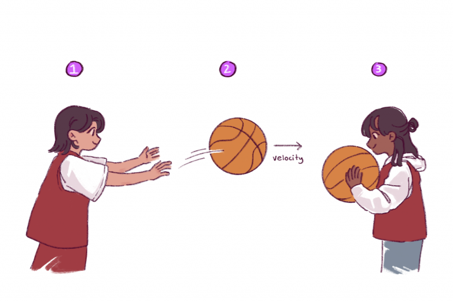
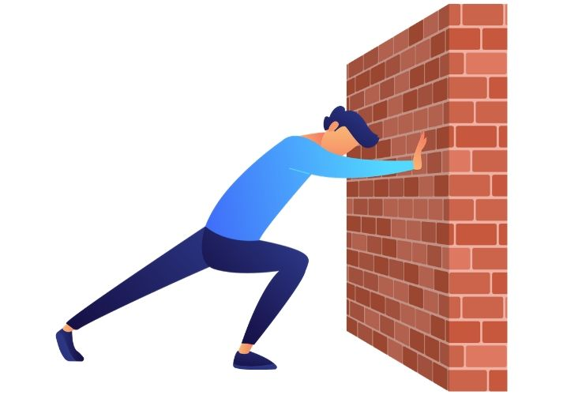

Newton's laws of motion are fundamental principles that help us understand how objects behave in motion and how they respond to forces. The first law states that an object will remain at rest or in uniform motion in a straight line unless acted upon by an external force. The second law describes the relationship between force, mass, and acceleration, stating that the acceleration of an object is directly proportional to the force applied to it and inversely proportional to its mass. Finally, the third law states that for every action, there is an equal and opposite reaction. These laws apply not just to everyday objects, but also to celestial bodies, subatomic particles, and everything in between.

Law of Inertia: This law states that objects will remain at rest or continue moving at a constant velocity in a straight line unless acted upon by an external force. In other words, an object's natural tendency is to resist changes in its state of motion. The amount of resistance to changes in motion depends on the object's mass - the more massive the object, the greater its resistance to changes in motion. This law is often referred to as the law of inertia.
Law of Acceleration: This law relates the force acting on an object to its acceleration. The greater the force, the greater the acceleration, and the greater the mass of the object, the smaller the acceleration for the same force. Mathematically, this law is expressed as F = ma, where F is the force acting on the object, m is its mass, and a is the resulting acceleration. This law helps us understand how forces cause changes in motion, such as how a force can cause an object to speed up, slow down, or change direction.
Law of Action-Reaction: This law states that for every action, there is an equal and opposite reaction. When one object exerts a force on another object, the second object exerts an equal and opposite force back on the first object. This law explains how forces work in pairs - if you push on a wall, the wall pushes back on you with an equal and opposite force. These two forces are called action and reaction forces, and they always occur in pairs./lesson3/
Newton's laws of motion are the foundation for classical mechanics, which is the study of the motion of objects that are not affected by quantum mechanics. These laws are still widely used in many fields, including physics, engineering, and even space exploration. They help explain phenomena such as the orbits of planets, the motion of projectiles, and the behavior of fluids. Understanding and applying these laws is essential in many areas of modern technology and scientific research.
{kind=link}
{kind=link}
{kind=link}